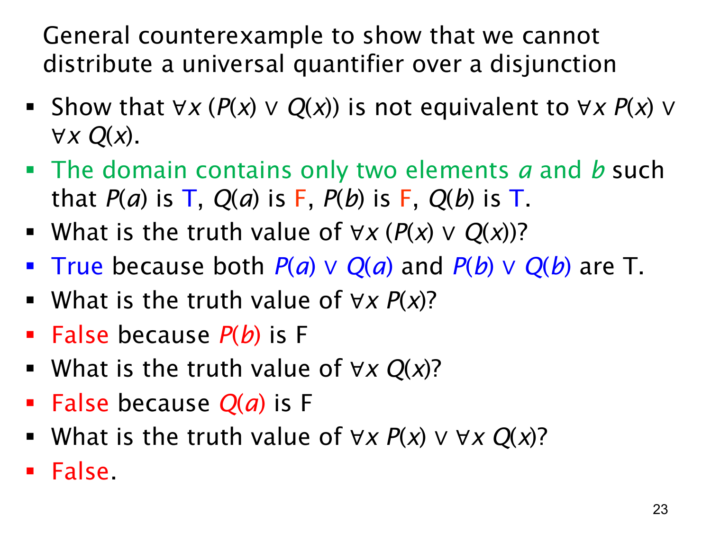

L1.2 · 第 23 页讲解原文
查看这一页课件

一般反例：逐项计算量词两侧的真值
这页把上一页的反例换成完全抽象的两个元素，不再依赖任何现实类别。令论域恰好为 {a,b}，给谓词规定如下真值：
| 对象 | P | Q | P∨Q |
|---|---|---|---|
| a | 真 | 假 | 真 |
| b | 假 | 真 | 真 |
先看 ∀x(P(x)∨Q(x))。论域只有 a,b；P(a)∨Q(a) 为真，P(b)∨Q(b) 也为真。所以左式为真。
再分别看两个全称命题。∀xP(x) 为假，因为 b 是反例，P(b) 假；∀xQ(x) 也为假，因为 a 是反例，Q(a) 假。因此
(∀xP(x))∨(∀xQ(x))≡F∨F≡F.
在同一个论域与同一组谓词解释下，∀x(P(x)∨Q(x)) 真而 (∀xP(x))∨(∀xQ(x)) 假，故两者不逻辑等价。这个反例也揭示了关键差别：每个对象可以由不同的分支使“或”成立；把量词拆到外面后，却要求其中同一个分支对所有对象都成立。